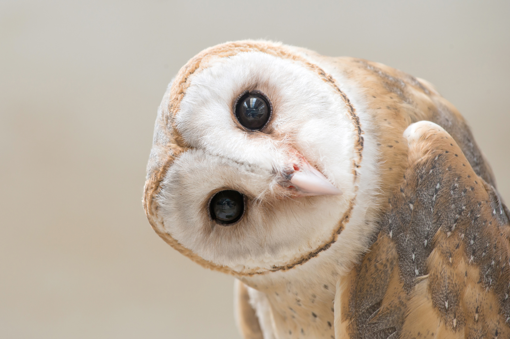

웹사이트 만들기

어떤 웹사이트를 만들어야 할지 아직은 모르겠다.
HTML
동영상
JavaScript
커뮤니티 순위
를 보면
유머
가 가장 많다. 그리고
게임, 스포츠, 연예, 자동차, 요리, 번역, 사진, IT
등이 있다. 유튜브 순위는 음악, 춤, 게임, 유머가 주를 이룬다.
Please enable JavaScript to view the
comments powered by Disqus.